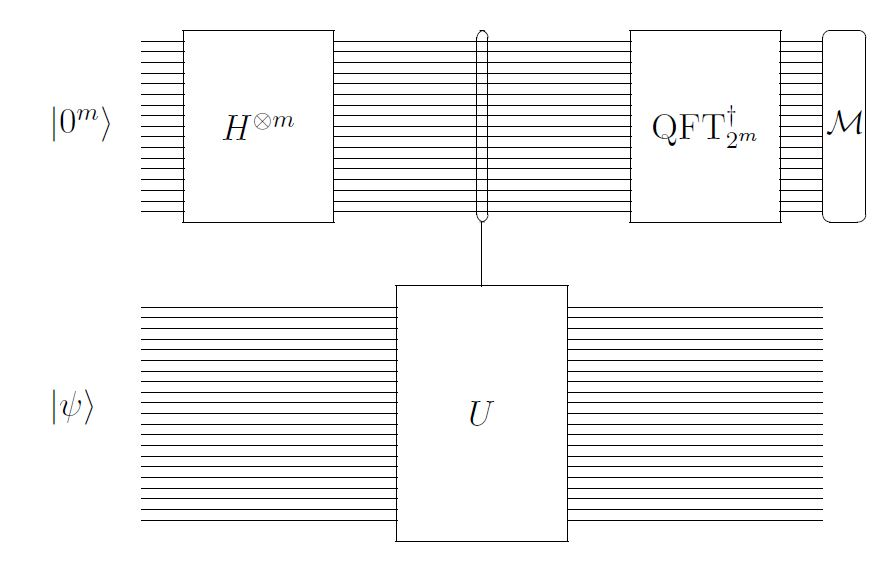
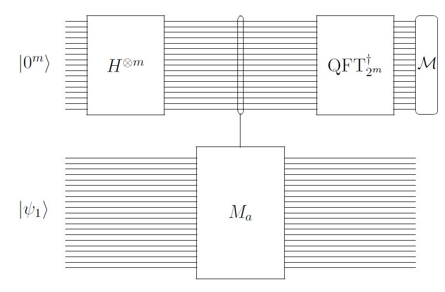

$$
\newcommand{\bra}[1]{\left\langle #1 \right|}
\newcommand{\ket}[1]{\left|#1 \right\rangle}
\newcommand{\bracket}[2]{\left\langle #1 \middle|#2 \right\rangle}
$$
10.1 Order finding とは
まずいくつか表記法を説明します。
整数の合同
- ※\(a,b,N\in\mathbb{Z}, N \geq 1 \)
- \( a \equiv b \pmod{N} \)
- \(\Leftrightarrow N|(a-b) \)
- \( \Leftrightarrow Nは(a-b)の約数である \)
- \( \Leftrightarrow a-b = kN ,k\in\mathbb{Z}\)
- \( \Leftrightarrow a \bmod N = b \bmod N\)
- \(\mathbb{Z}_N=\{0,...,N-1\}\)
- 環（加法と乗法ができる）でありNが素数の時は体（四則演算ができる）
- \(\mathbb{Z}^{*}_N=\{a\in\mathbb{Z}:\gcd(a,N)=1\}\)
- e.g. \(\mathbb{Z}^{*}_{35}=\{1,2,3,4,6,8,9,11,12,13,16,17,18,19,22,23,24,26,27,29,31,32,33,34\}\)
- Nを法とする乗法群になっている。
- 群Gの公理:(閉じている・結合則・単位元・逆元)
- オイラーのφ関数：\(\phi(N)=|\mathbb{Z}_N|=\mathbb{Z}^{*}_Nの要素数\)
- 群とかの参考
\(\forall a\in\mathbb{Z}^*_N, \exists!b \in\mathbb{Z}^*_N,ab\equiv 1\pmod{N}\)
- \(1\equiv a^{\phi(m)}=a\times a^{\phi(m)-1}\)（オイラーの定理より）
- \(b=a^{-1}\pmod{N} \)と書く
- \(a\in\mathbb{Z}^*_N,a^r \equiv 1 \)をみたす、
最小のrを\(\mathbb{Z}^*_N\)におけるaのorderと言う。
- \( a^{\phi(N)} \equiv 1\)より、rは定義可能である。
- e.g.
- \(\gcd(4,35)=1,4\in\mathbb{Z}^*_{35}\)
- \(4^1\equiv 4, 4^2\equiv 16, 4^3\equiv29, 4^4\equiv11, 4^5\equiv9, 4^6\equiv1 \)
- 35を法とした4のorderは6である。
- \(\phi(35)=24=6n\)
Order findingとは
| Input | \(N\geq 2,a\in\mathbb{Z}^*_N\) | \(N=35,a=4\) |
| Output | \(\mathbb{Z}^*_N\)におけるaのorder | \(6\) |
10.2 Order findingを位相推定で解く
\(M_a\)変換
- aを乗ずる演算
- \(N\geq 2,a \in \mathbb{Z}^*_N,x \in \mathbb{Z}_N,n=\lfloor \log_2(N-1) \rfloor +1\)
- \(M_a\ket{x} =
\begin{cases}
\ket{ax\pmod{N}} & (0 \leq x < N )\\
\ket{x} & (N\leq x < 2^n)
\end{cases}
\) と定義
- 可逆、つまりユニタリ
\(M_a\)変換を位相推定に
- \(\Lambda_m(M_a)\ket{k}\ket{x} = \ket{k}\ket{a^kx\pmod{N}} \)(mは精度)
-
参考:\(\Lambda_m(U)\ket{k}\ket{\phi} =\ket{k} (U^k\ket{\phi})\)
- \(\ket{\psi_0} = \frac{1}{\sqrt{r}}(\ket{1} + \ket{a} + \ket{a^2} + \cdots + \ket{a^{r-1}})\)
-
\(M_a\ket{\psi_0}= \ket{\psi_0}
\)
-
固有値は1
- \(\ket{\psi_1} = \frac{1}{\sqrt{r}}(\ket{1} + \omega_r^{-1}\ket{a} + \omega_r^{-2}\ket{a^2} + \cdots + \omega_r^{-(r-1)}\ket{a^{r-1}})\)
-
\(M_a\ket{\psi_1} = \omega_r\ket{\psi_1}
\)
-
固有値は\(\omega_r, \omega_r=e^{2\pi i/r}\)
- \(\ket{\psi_j} = \frac{1}{\sqrt{r}}(\ket{1} + \omega_r^{-j}\ket{a} + \omega_r^{-2j}\ket{a^2} + \cdots + \omega_r^{-(r-1)j}\ket{a^{r-1}})\)
-
\(M_a\ket{\psi_j} = \omega_r^j\ket{\psi_j}
\)
-
固有値は\(\omega_r^j\)
- 実際に固有ベクトルをどうやって作るのかはさておき…………（あとまわし）
- 
- \(M_aと\ket{\psi_1}\)をいれる。
- 
- \(\psi_1\)の固有値は\(\omega_r\)になるので、位相推定して測定すると\(\frac{1}{r}\)に近い値が高確率で得られる。
- 何回か測定して最頻値を取ると、\(\frac{j}{2^m}\)が得られる。（精度の話は次のスライド）
rを求めたい
- \(j \in \{0,\cdots,2^m-1\} \)が測定結果
- \(\frac{j}{2^m} \approx \frac{1}{r}\)だから逆数を取って四捨五入すればいい。
- mが足りなかったら精度が低くてちゃんとできない。
\(\frac{1}{r-1},\frac{1}{r},\frac{1}{r+1}\)をちゃんと区別するには、m=2n bitくらいあればよい。
- \(\frac{1}{r}と\frac{1}{r+1}\)が区別できればいいから\(\frac{1}{2}(\frac{1}{r}-\frac{1}{r+1})>\frac{1}{2N^2}\)くらい精度があればいいのでは
- 得られる値\(\frac{2^m}{j}と実際の値r\)の差は、m=2nのとき\(\frac{1}{2}\)未満になることが示される.
\(\ket{\psi_1}\)をどうにかしたい
- rが分かれば\(\ket{\psi_1}\)がわかる。（？）
- 発想を変えよう。
- \(\frac{1}{\sqrt{r}}\sum^{r-1}_{k=0}\ket{\psi_k}=\frac{1}{r}\sum_{k=0}^{r-1}\sum_{l=0}^{r-1}\omega_r^{-kl}\ket{a^l}=\ket{a^0}=\ket{1} \)
- \(\omega^{-rl}_r-1=0\)をつかう
- \(\ket{1}\)をいれれば\(\ket{\psi_k}(k\in\mathbb{Z}_N)\)を一様に入れたのと同じ。
- 測定直前では\(\frac{1}{\sqrt{r}}\sum_{k=0}^{r-1}\ket{\phi_k}\ket{\psi_k}\)
- 先頭\(m\)qubitは\(\ket{\psi_k}\)での位相推定が実行済み。
- \(\ket{\psi_k}(k\in\mathbb{Z}_N)\)はそれぞれ直交している(ユニタリ行列の固有ベクトルだから p48参照)
- \(\ket{1}\)で位相推定をすれば、固有ベクトルをなにか入力して位相推定をするのと同じだから問題ない。つづきは§11。